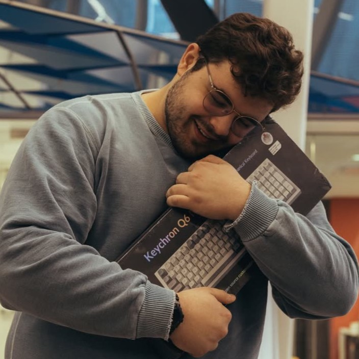
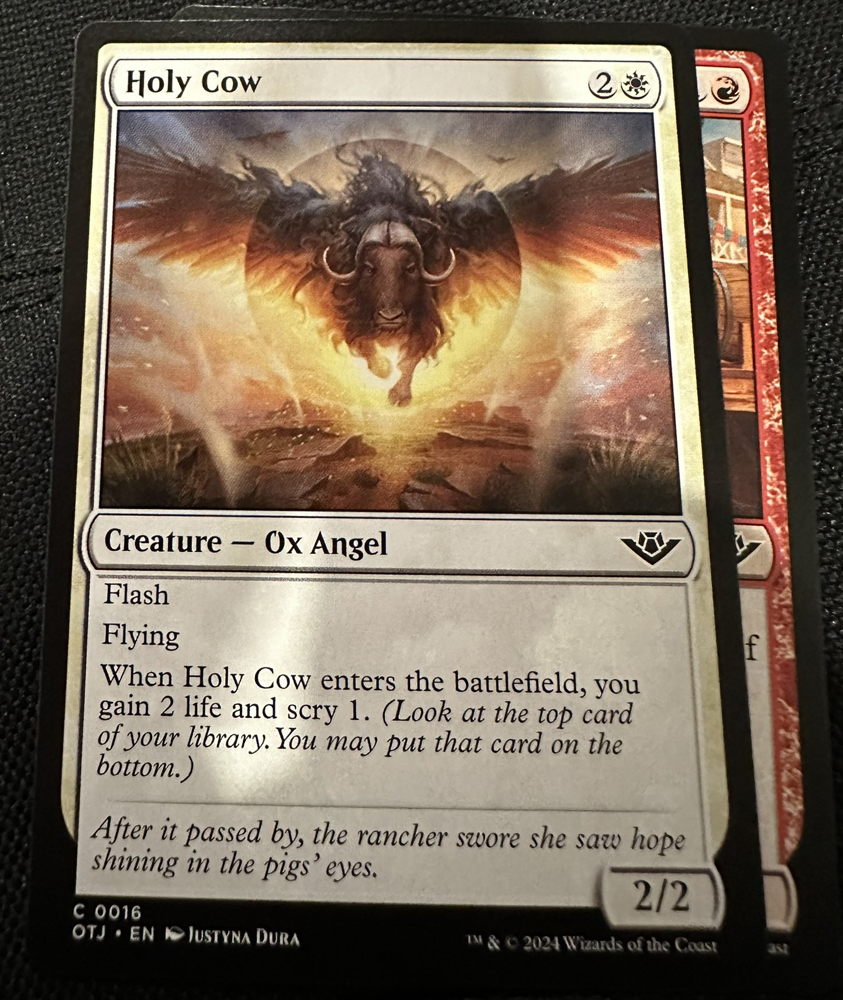
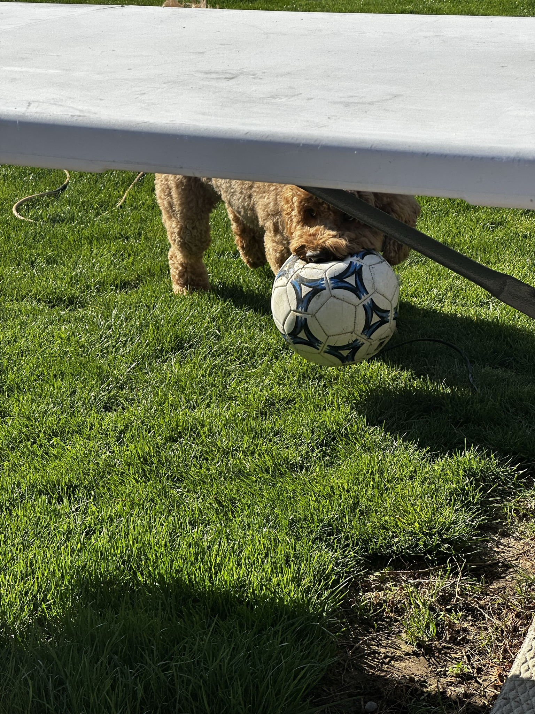
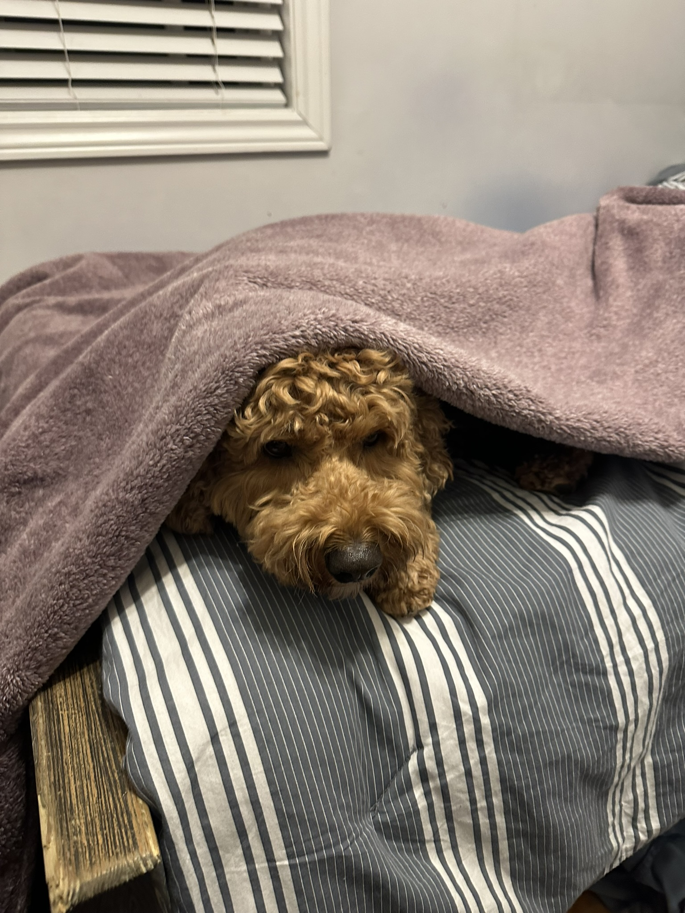

Georgios Dialynas-Vatsis
Hi, I'm Georgios, most people call me George. I'm a Greek-Canadian university student at TMU. This website is a small portfolio of some of my work.
I really enjoy low level programming, especially niche assembly languages. Recently I've found myself coding most in Rust, Python, and C. I've been programming for a long time, and yet I'm always finding myself learning new things.
I hope you enjoy this website, if you have any questions, comments, or concerns, feel free to email me at georgios@vatsis.ca or reach out on LinkedIn
Toronto Metropolitan University
Founder & Former PresidentMetropolitan Open Source Society


I love strategy games specifically Risk, Zombicide, & Magic The Gathering. While programming is a big hobby of mine, I really enjoy watching movies, I miss working at the theatre because I would always get to see the newest movies for free.
My favourite video games are Hearthstone, Disco Elysium, The Binding of Isaac Rebirth and TitanFall 2.
In my freetime, I really enjoy reading comic books, graphic novels, and programming textbooks. My personal favorite graphic novel is Persepolis, which also has a great movie that you should definitely watch. My favorite comic book series is Judge Dredd, but I really like the Batman comics too.
On top of that, I love building Legos and model kits, my favourite lego set is 40711.

